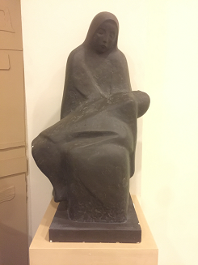
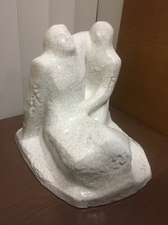
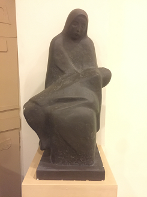
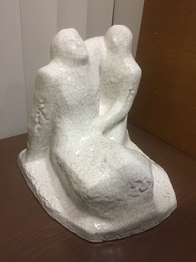

Познакомьтесь с текстом, чтобы выполнить следующие задания. Рассказ о некоторых скульптурах музея «А музы не молчали»
Несколько работ Виктора Зайко – «Скорбящая» – мать с мертвым ребенком на руках и женщина, замерзшая от холода на улице и «Другосбережение»
 


